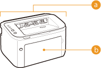
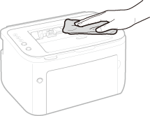
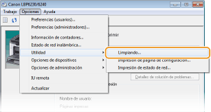
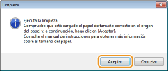

0KXF-03Y
Limpie con regularidad el equipo para evitar que se deteriore la calidad de la impresión y para asegurarse de que funciona sin problemas. Lea detenidamente las instrucciones de seguridad antes de empezar a limpiarlo. Mantenimiento e inspecciones
Dónde limpiar
|
 |
 Exterior del equipo y ranuras de ventilación Exterior del equipo y ranuras de ventilación Unidad de fijación interior Unidad de fijación interior |
Limpie con regularidad el exterior del equipo con el fin de mantenerlo en buenas condiciones. Limpie periódicamente las ranuras de ventilación para quitarles el polvo.
1
Apague el equipo y desenchufe la clavija de toma de corriente del receptáculo de alimentación de CA.
Cuando apague el equipo, los datos que están a la espera de imprimirse se eliminarán.
2
Limpie el exterior del equipo y las ranuras de ventilación.
Utilice un paño suave y bien escurrido humedecido con agua o con detergente suave diluido en agua.
En cuanto a la ubicación de las ranuras de ventilación, consulte Parte trasera.

3
Espere hasta que el exterior del equipo se seque por completo.
4
Conecte de nuevo el cable de alimentación a la toma de corriente de CA.
La suciedad puede adherirse a la unidad de fijación que se encuentra en el interior del equipo y hacer que aparezcan manchas y rayas negras en las impresiones. En ese caso, proceda del modo siguiente para limpiar la unidad de fijación. Tenga en cuenta que no puede limpiar la unidad de fijación si el equipo tiene documentos a la espera de imprimirse. Para limpiar la unidad de fijación, necesita papel de tamaño A4. Antes de empezar, cargue papel de tamaño A4 en la bandeja multiuso o en la ranura de alimentación manual. Carga de papel en la bandeja multiuso Carga de papel en la ranura de alimentación manual
1
Seleccione el equipo haciendo clic en  en la bandeja del sistema.
en la bandeja del sistema.
en la bandeja del sistema.
2
Seleccione [Opciones]  [Utilidad] [Limpiando].
[Utilidad] [Limpiando].

3
Haga clic en [Aceptar].

 |
El papel entra lentamente hacia el interior del equipo y comienza la limpieza. Ésta habrá finalizado cuando el papel haya salido completamente.
La limpieza no puede cancelarse una vez comenzada. Espere hasta que termine (unos 90 segundos).
|
 |
|
Limpieza desde el IU remoto
También puede limpiar la unidad de fijación desde la página [Menú de utilidades] del IU remoto. Limpieza
|